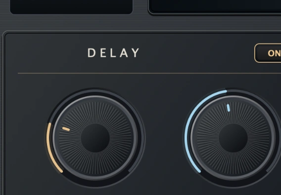

01 — DELAY↗

Make repeats part of the music.
Create echoes that extend a phrase, reinforce a groove or add a rhythmic layer behind the original performance. Time sets the repeat interval, while Feedback controls how much of the delayed signal returns to produce further repeats.
TIME / FEEDBACK / TEMPO SYNC